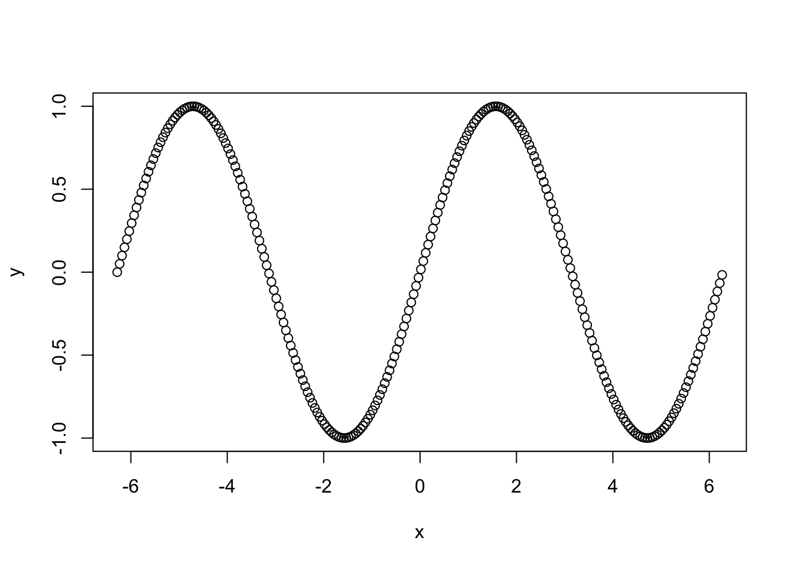
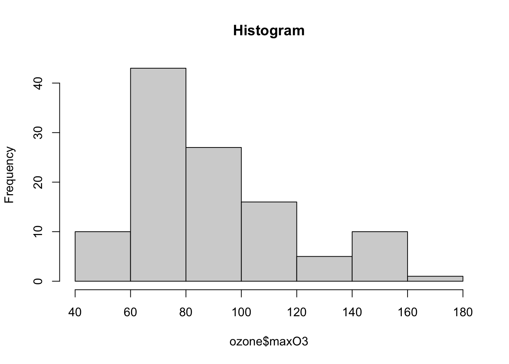

Chapitre 2 Cartographie
De nombreuses données comportent des informations de géolocalisation. Il est alors naturel d’utiliser des cartes pour les visualiser. On peut généralement si’ntéresser à deux types de cartes :
- statiques : des cartes figées que l’on pourra exporter aux formats pdf ou png par exemple, ce type est généralement utilisé pour des rapports ;
- dynamiques ou interactives : des cartes que l’on pourra visualiser dans un navigateur et sur lesquelles on pourra zoomer ou obtenir des informations auxiliaires lorsu’on clique sur certaines parties de la carte.
De nombreux packages R permettent de d’obtenir des cartes. Dans cette partie, on s’interessera aux packages ggmap et sf pour les cartes statiques et leaflet pour les cartes interactives.
2.1 Le package ggmap
Nous montrons dans cette section comment récupérer des fonds de carte et ajouter quelques informations à l’aide de ggmap. Pour plus de détails sur ce package, on pourra consulter cet article pour plus de détails.
ggmap permet de récupérer facilement des fonds de carte. Par exemple :
library(ggmap)
us <- c(left = -125, bottom = 25.75, right = -67, top = 49)
map <- get_stamenmap(us, zoom = 5, maptype = "toner-lite")
ggmap(map)
Pour l’Europe on fait
europe <- c(left = -12, bottom = 35, right = 30, top = 63)
get_stamenmap(europe, zoom = 5,"toner-lite") %>% ggmap()
On peut également changer le fond de carte

Pour la france, on aura
fr <- c(left = -6, bottom = 41, right = 10, top = 52)
get_stamenmap(fr, zoom = 5,"toner-lite") %>% ggmap()
La fonction geocode de ggmapqui permettait de récupérer des latitudes et longitudes nécessite désormais une API, ce qui contraint son utilisation. Nous proposons d’utiliser la fonction suivante :
if (!(require(jsonlite))) install.packages("jsonlite")
mygeocode <- function(adresses){
# adresses est un vecteur contenant toutes les adresses sous forme de chaine de caracteres
nominatim_osm <- function(address = NULL){
## details: http://wiki.openstreetmap.org/wiki/Nominatim
## fonction nominatim_osm proposée par D.Kisler
if(suppressWarnings(is.null(address))) return(data.frame())
tryCatch(
d <- jsonlite::fromJSON(
gsub('\\@addr\\@', gsub('\\s+', '\\%20', address),
'http://nominatim.openstreetmap.org/search/@addr@?format=json&addressdetails=0&limit=1')
), error = function(c) return(data.frame())
)
if(length(d) == 0) return(data.frame())
return(c(as.numeric(d$lon), as.numeric(d$lat)))
}
tableau <- t(sapply(adresses,nominatim_osm))
colnames(tableau) <- c("lon","lat")
return(tableau)
}Cette fonction permet de récupérer les latitudes et longitudes de lieux à spécifier :
## lon lat
## the white house -77.03655 38.8977## lon lat
## Paris 2.351462 48.8567## lon lat
## Rennes -1.68002 48.11134- Récupérer les latitudes et longitudes de Paris, Lyon et Marseille et représenter ces 3 villes sur une carte de la france.
V <- c("Paris","Lyon","Marseille")
A <- mygeocode(V)
A <- A %>% as_tibble() %>% mutate(Villes=V)
fr <- c(left = -6, bottom = 41, right = 10, top = 52)
fond <- get_stamenmap(fr, zoom = 5,"toner-lite")
ggmap(fond)+geom_point(data=A,aes(x=lon,y=lat),color="red")
- Le fichier villes_fr.csv contient les populations des 30 plus grandes villes de france. Représenter à l’aide d’un point les 30 plus grandes villes de france. On fera varier la taille du point en fonction de la population en 2014.

df <- read_csv("villes_fr.csv")
df$Commune <- as.character(df$Commune)
df$Commune[10] <- "Lille"
coord <- mygeocode(as.character(df$Commune)) %>% as_tibble()
df1 <- bind_cols(df,coord)
ggmap(fond)+geom_point(data=df1,aes(x=lon,y=lat),color="red")
ggmap(fond)+geom_point(data=df1,aes(x=lon,y=lat,size=`2014`),color="red")2.2 Cartes avec contours, le format shapefile
ggmap permet de récupérer facilement des fonds de cartes et de placer des points dessus avec la syntaxe ggplot. Cependant, de nombreuses fonctions de ca package nécessitent une API et il est difficile de définir des contours (frontières de pays, départements ou régions) avec ggmap. Nous proposons ici de présenter brièvement le package sf qui va nous permettre de créer des cartes “avancées”, en gérant les contours à l’aide d’objets particuliers mais aussi en prenant en compte différents systèmes de coordonnées. En effet, la terre n’est pas plate… mais une carte est souvent visualisée en 2D, il faut par conséquent réaliser des projections pour représenter des lieux définis par une coordonnée (comme la latitue et la longitude) sur une carte 2D. Ces projections sont généralement gérées par les packages qui permettent de faire de la cartographie comme sf.On pourra trouver de la documentation sur ce package aux url suivantes :
- https://statnmap.com/fr/2018-07-14-initiation-a-la-cartographie-avec-sf-et-compagnie/
- dans les vignettes sur la page du cran de ce package : https://cran.r-project.org/web/packages/sf/index.html
Ce package propose de définir un nouveau format sf adapté à la cartographie. Regardons par exemple l’objet nc
## [1] "sf" "data.frame"## Simple feature collection with 100 features and 14 fields
## geometry type: MULTIPOLYGON
## dimension: XY
## bbox: xmin: -84.32385 ymin: 33.88199 xmax: -75.45698 ymax: 36.58965
## CRS: 4267
## First 10 features:
## AREA PERIMETER CNTY_ CNTY_ID NAME FIPS FIPSNO CRESS_ID BIR74 SID74
## 1 0.114 1.442 1825 1825 Ashe 37009 37009 5 1091 1
## 2 0.061 1.231 1827 1827 Alleghany 37005 37005 3 487 0
## 3 0.143 1.630 1828 1828 Surry 37171 37171 86 3188 5
## 4 0.070 2.968 1831 1831 Currituck 37053 37053 27 508 1
## 5 0.153 2.206 1832 1832 Northampton 37131 37131 66 1421 9
## 6 0.097 1.670 1833 1833 Hertford 37091 37091 46 1452 7
## 7 0.062 1.547 1834 1834 Camden 37029 37029 15 286 0
## 8 0.091 1.284 1835 1835 Gates 37073 37073 37 420 0
## 9 0.118 1.421 1836 1836 Warren 37185 37185 93 968 4
## 10 0.124 1.428 1837 1837 Stokes 37169 37169 85 1612 1
## NWBIR74 BIR79 SID79 NWBIR79 geometry
## 1 10 1364 0 19 MULTIPOLYGON (((-81.47276 3...
## 2 10 542 3 12 MULTIPOLYGON (((-81.23989 3...
## 3 208 3616 6 260 MULTIPOLYGON (((-80.45634 3...
## 4 123 830 2 145 MULTIPOLYGON (((-76.00897 3...
## 5 1066 1606 3 1197 MULTIPOLYGON (((-77.21767 3...
## 6 954 1838 5 1237 MULTIPOLYGON (((-76.74506 3...
## 7 115 350 2 139 MULTIPOLYGON (((-76.00897 3...
## 8 254 594 2 371 MULTIPOLYGON (((-76.56251 3...
## 9 748 1190 2 844 MULTIPOLYGON (((-78.30876 3...
## 10 160 2038 5 176 MULTIPOLYGON (((-80.02567 3...Ces données contiennent des informations sur les morts subites de nourissons dans des villes de Caroline du Nord. On remarque que l’objet nc est au format sf et data.frame. On peut donc l’utiliser comme un data.frame classique. Le format sf permet l’ajout d’une colonne particulière (geometry) qui délimitera les villes à l’aide de polygones. Une fois l’objet obtenu au format sf, il est facile de visualiser la carte avec un plot classique

ou en utilisant le verbe geom_sf si on veut faire du ggplot

Il devient dès lors facile de colorier des villes et d’ajouter leurs noms :
La colonne geometry de nc est au format MULTIPOLYGON, elle permettra donc de délimiter les frontières des villes. Si maintenant on souhaite représenter une ville à l’aide d’un point défini par sa latitude et longitude, il va falloir modifier le format de cette colonne geometry. On peut le faire de la manière suivante :
- On récupère les latitudes et longitudes de chaque ville :
coord.ville.nc <- mygeocode(paste(as.character(nc$NAME),"NC"))
coord.ville.nc <- as.data.frame(coord.ville.nc)
names(coord.ville.nc) <- c("lon","lat")- On met ces coordonnées au format
MULTIPOINT
coord.ville1.nc <- coord.ville.nc %>%
filter(lon<=-77 & lon>=-85 & lat>=33 & lat<=37) %>%
as.matrix() %>% st_multipoint() %>% st_geometry()
coord.ville1.nc <- coord.ville.nc %>%
filter(lon<=-77 & lon>=-85 & lat>=33 & lat<=37) %>%
as.matrix() %>% st_multipoint() %>% st_geometry() %>% st_cast(to="POINT")
coord.ville1.nc## Geometry set for 79 features
## geometry type: POINT
## dimension: XY
## bbox: xmin: -84.08862 ymin: 33.93323 xmax: -77.01151 ymax: 36.503
## CRS: NA
## First 5 geometries:- On indique que ces coordonnées sont des latitudes et longitude et on ajoute la colonne aux données initiales
- On peut enfin représenter la carte avec les frontières et les points :

Le package sf possède également des fonctions très utiles pour traiter des données cartographiques, on peut citer par exemple :
st_distancequi permet de calculer des distances entre coordonnées ;st_centroidpour calculer le centre d’une région.
On peut ainsi représenter les centres des villes délimitées par les polygones des données nc avec
nc2 <- nc %>% mutate(centre=st_centroid(nc)$geometry)
ggplot(nc2)+geom_sf()+geom_sf(aes(geometry=centre))
Nous nous servons de la carte GEOFLAR proposée par l’Institut Géographique National pour récupérer un fond de carte contenant les frontières des départements français. Cette carte est disponible sur le site http: //professionnels.ign.fr/ au format shapefile, elle se trouve dans l’archive dpt.zip. Il faut décompresser pour reproduire la carte. Grâce au package sf, cette carte, contenue dans la série de fichiers departement du répertoire dpt, peut être importée dans un objet R :

Refaire la carte de l’exercice 2.1 sur ce fond de carte.
coord.ville1 <- data.frame(df1[,14:15]) %>%
as.matrix() %>% st_multipoint() %>% st_geometry()
coord.ville2 <- st_cast(coord.ville1, to = "POINT")## Geometry set for 1 feature
## geometry type: MULTIPOINT
## dimension: XY
## bbox: xmin: -4.486009 ymin: 42.69853 xmax: 7.750713 ymax: 50.63657
## CRS: NA## Geometry set for 30 features
## geometry type: POINT
## dimension: XY
## bbox: xmin: -4.486009 ymin: 42.69853 xmax: 7.750713 ymax: 50.63657
## CRS: NA
## First 5 geometries:st_geometry(df1) <- coord.ville2
st_crs(df1) <- 4326
ggplot(dpt)+geom_sf(fill="white")+
geom_sf(data=df1,aes(size=`2014`),color="red")+theme_void()
Nous souhaitons visualiser graphiquement les différences de taux de chômage par département entre deux années. Pour cela, nous disposons de chaque taux mesuré aux premiers trimestres des années 2006 et 2011 (variables TCHOMB1T06, TCHOMB1T11) qui se trouvent dans le jeu de données tauxchomage.csv
- Importer le jeu de données.
- Faire la jointure de cette table avec celle des départements. On pourra utiliser inner_join.
- Comparer les taux de chomage en 2006 et 2011.
dpt3 <- dpt2 %>% select(A2006=TCHOMB1T06,A2011=TCHOMB1T11,geometry) %>%
gather("Annee","TxChomage",-geometry)ggplot(dpt3) + aes(fill = TxChomage)+geom_sf() +
facet_wrap(~Annee, nrow = 1)+
scale_fill_gradient(low="white",high="brown")+theme_bw()
2.2.1 Challenge 1 : carte des températures avec ggmap
On souhaite ici faire une carte permettant de visualiser les température en France à un moment donné. Les données se trouvent sur le site des données publiques de meteo france. On peut notamment récupérer les températures observées dans certaines stations en france ainsi que la géolocalisation de ces stations.
- Importer les 2 bases nécessaires. On pourra les lire directment sur le site. Convertir les degrés Kelvin en degrés Celsius et faire la jointure de ces bases.
donnees <- read_delim("https://donneespubliques.meteofrance.fr/donnees_libres/Txt/Synop/synop.2020052415.csv",delim=";",col_types = cols(t=col_double()))
station <- read_delim("https://donneespubliques.meteofrance.fr/donnees_libres/Txt/Synop/postesSynop.csv",delim=";")
donnees$t <- donnees$t-273.15 #on passe en degrés celcius
temp <- donnees %>% select(numer_sta,t)
names(temp)[1] <- c("ID")
D <- inner_join(temp, station, by = c("ID"))- Eliminer les station d’outre mer (on pourra conserver uniquement les stations qui ont une longitude entre -20 et 25). On appellera ce tableau station1. Visualiser les stations sur la carte contenant les frontières des départements français.
station1 <- D %>% filter(Longitude<25 & Longitude>-20) %>% na.omit()
station4326 <- st_multipoint(as.matrix(station1[,5:4])) %>% st_geometry()
st_crs(station4326) <- 4326
ggplot(dpt) + geom_sf()+geom_sf(data=station4326)
- Créer un dataframe au format sf qui contient les températures des stations ainsi que leurs coordonnées dans la colonne geometry. On pourra commencer avec
station2 <- station1 %>% select(Longitude,Latitude) %>%
as.matrix() %>% st_multipoint() %>% st_geometry()
st_crs(station2) <- 4326
station2 <- st_cast(station2, to = "POINT")- Représenter les stations sur une carte de france. On pourra mettre un point de couleur différente en fonction de la température.
ggplot(dpt) + geom_sf(fill="white")+
geom_sf(data=df,aes(color=temp),size=2)+
scale_color_continuous(low="yellow",high="red")
- On obtient les cordonnées des centroïdes des départements à l’aide de
On déduit les distances entre ces centroïdes et les stations avec (df étant la table sf obtenue à la question 3).
Prédire la température de chaque département à l’aide de la règle du 1 plus proche voisin.
- Colorier les départements en fonction de la température prédite dans le département. On pourra faire varier le dégradé de couleur du jaune (pour les faibles températures) au rouge (pour les fortes).
dpt1 <- dpt %>% mutate(t_prev=as.matrix(t_prev))
ggplot(dpt1) + geom_sf(aes(fill=t_prev)) +
scale_fill_continuous(low="yellow",high="red")+theme_void()
2.3 Cartes interactives avec leaflet
Leaflet est un package permettant de faire de la cartographie ineractive. On pourra consulter un descriptif synthétique ici. Le principe est similaire à ce qui a été présenté précédemment : les cates sont construites à partie de couches qui se superposent. Un fond de carte s’obtient avec les fonctions leaflet et addTiles
On dispose de plusieurs styles de fonds de cartes (quelques exemples ici) :
Paris <- mygeocode("paris")
m2 <- leaflet() %>% setView(lng = Paris[1], lat = Paris[2], zoom = 12) %>%
addTiles()
m2 %>% addProviderTiles("Stamen.Toner")Il est fréquemment utile de repérer des lieux sur une carte à l’aide de symboles. On pourra effectuer cela à l’aide des fonctions addMarkers et addCircles…
data(quakes)
leaflet(data = quakes[1:20,]) %>% addTiles() %>%
addMarkers(~long, ~lat, popup = ~as.character(mag))Le caractère interactif de la carte permet d’ajouter de l’information lorsqu’on clique sur un marker (grâce à l’option popup). On peut également ajouter des popups qui contiennent plus d’information, voire des liens vers des sites web :
content <- paste(sep = "<br/>",
"<b><a href='http://www.samurainoodle.com'>Samurai Noodle</a></b>",
"606 5th Ave. S",
"Seattle, WA 98138"
)
leaflet() %>% addTiles(urlTemplate = "http://{s}.tile.openstreetmap.org/{z}/{x}/{y}.png") %>%
addPopups(-122.327298, 47.597131, content,
options = popupOptions(closeButton = FALSE)
)Placer un popup localisant l’Université Rennes 2 (Campus Villejean). On ajoutera un lien renvoyant sur le site de l’Université.
R2 <- mygeocode("Universite Rennes 2 Villejean") %>% as_tibble()
info <- paste(sep = "<br/>",
"<b><a href='https://www.univ-rennes2.fr'>Universite Rennes 2</a></b>",
"Campus Villejean")
leaflet() %>% addTiles() %>%
addPopups(R2[1]$lon, R2[2]$lat, info,options = popupOptions(closeButton = FALSE))2.3.1 Challenge 2 : Visualisation des stations velib à Paris
Plusieurs villes dans le monde ont accepté de mettre en ligne les données sur l’occupation des stations velib. Ces données sont facilement accessibles et mises à jour en temps réel. On dispose généralement de la taille et la localisation des stations, la proportion de vélos disponibles… Il est possible de requêter (entre autres) :
- sur les données Decaux
- sur Open data Paris
- sur vlstats pour des données mensuelles ou historiques ou encore sur Velib pour obtenir des fichiers qui sont rafraichis régulièrement.
- Récupérer les données actuelles de velib disponibles pour la ville de Paris : https://opendata.paris.fr/explore/dataset/velib-disponibilite-en-temps-reel/information/. On pourra utiliser la fonction url dans read.csv.
#sta.Paris <- read.csv(url("https://opendata.paris.fr/explore/dataset/velib-disponibilite-en-temps-reel/download/?format=csv&timezone=Europe/Berlin&use_labels_for_header=true"),sep=";")
sta.Paris <- read_delim("https://opendata.paris.fr/explore/dataset/velib-disponibilite-en-temps-reel/download/?format=csv&timezone=Europe/Berlin&use_labels_for_header=true",delim=";")- Décrire les variables du jeu de données.
Nous avons de l’information sur la disponibilité, le remplissage… de stations velib parisiennes.
- Créer les une variable latitude et une variable longitude à partir de la variable geo.
sta.Paris1 <- sta.Paris %>% separate(`Coordonnées géographiques`,into=c("lat","lon"),sep=",") %>%
mutate(lat=as.numeric(lat),lon=as.numeric(lon))- Visualiser les positions des stations sur une carte leaflet.
map.velib1 <- leaflet(data = sta.Paris1) %>%
addTiles() %>%
addCircleMarkers(~ lon, ~ lat,radius=3,
stroke = FALSE, fillOpacity = 0.5,color="red"
)
map.velib1- Ajouter un popup qui permet de connaitre le nombre de vélos disponibles (électriques+mécanique) quand on clique sur la station (on pourra utiliser l’option popup dans la fonction addCircleMarkers).
map.velib2 <- leaflet(data = sta.Paris1) %>%
addTiles(urlTemplate = "http://{s}.tile.openstreetmap.org/{z}/{x}/{y}.png") %>%
addCircleMarkers(~ lon, ~ lat,radius=3,stroke = FALSE,
fillOpacity = 0.7,color="red",
popup = ~ sprintf("<b> Vélos dispos: %s</b>",as.character(`Nombre total vélos disponibles`)))
#ou sans sprintf
map.velib2 <- leaflet(data = sta.Paris1) %>%
addTiles(urlTemplate = "http://{s}.tile.openstreetmap.org/{z}/{x}/{y}.png") %>%
addCircleMarkers(~ lon, ~ lat,radius=3,stroke = FALSE, fillOpacity = 0.7,color="red",
popup = ~ paste("Vélos dispos :",as.character(`Nombre total vélos disponibles`)))
map.velib2- Ajouter la nom de la station dans le popup.
map.velib3 <- leaflet(data = sta.Paris1) %>%
addTiles(urlTemplate = "http://{s}.tile.openstreetmap.org/{z}/{x}/{y}.png") %>%
addCircleMarkers(~ lon, ~ lat,radius=3,stroke = FALSE, fillOpacity = 0.7,color="red",
popup = ~ paste(as.character(`Nom station`),", Vélos dispos :",as.character(`Nombre total vélos disponibles`),sep=""))
map.velib3- Faire de même en utilisant des couleurs différentes en fonction de la proportion de vélos disponibles dans la station. On pourra utiliser les palettes de couleur
ColorPal1 <- colorNumeric(scales::seq_gradient_pal(low = "#132B43", high = "#56B1F7", space = "Lab"), domain = c(0,1))
ColorPal2 <- colorNumeric(scales::seq_gradient_pal(low = "red", high = "black", space = "Lab"), domain = c(0,1))map.velib4 <- leaflet(data = sta.Paris1) %>%
addTiles(urlTemplate = "http://{s}.tile.openstreetmap.org/{z}/{x}/{y}.png") %>%
addCircleMarkers(~ lon, ~ lat,radius=3,stroke = FALSE, fillOpacity = 0.7,
color=~ColorPal1(`Nombre total vélos disponibles`/`Capacité de la station`),
popup = ~ paste(as.character(`Nom station`),", Vélos dispos :",as.character(`Nombre total vélos disponibles`),sep=""))
map.velib4map.velib5 <- leaflet(data = sta.Paris1) %>%
addTiles(urlTemplate = "http://{s}.tile.openstreetmap.org/{z}/{x}/{y}.png") %>%
addCircleMarkers(~ lon, ~ lat,stroke = FALSE, fillOpacity = 0.7,
color=~ColorPal2(`Nombre total vélos disponibles`/`Capacité de la station`),
radius=~(`Nombre total vélos disponibles`/`Capacité de la station`)*8,
popup = ~ paste(as.character(`Nom station`),", Vélos dispos :",as.character(`Nombre total vélos disponibles`),sep=""))
map.velib5- Créer une fonction
local.stationqui permette de visualiser quelques stations autours d’une station choisie.
nom.station <- "Jussieu - Fossés Saint-Bernard"
local.station <- function(nom.station){
df <- sta.Paris1 %>% filter(`Nom station`==nom.station)
leaflet(data = sta.Paris1) %>% setView(lng=df$lon,lat=df$lat,zoom=15) %>%
addTiles() %>%
addCircleMarkers(~ lon, ~ lat,stroke = FALSE, fillOpacity = 0.7,
popup = ~ paste(as.character(`Nom station`),", Vélos dispos :",as.character(`Nombre total vélos disponibles`),sep="")) %>%
addMarkers(lng=df$lon,lat=df$lat,
popup = ~ paste(nom.station,", Vélos dispos :",as.character(df$`Nombre total vélos disponibles`),sep=""),
popupOptions = popupOptions(noHide = T))
}La fonction devra par exemple renvoyer